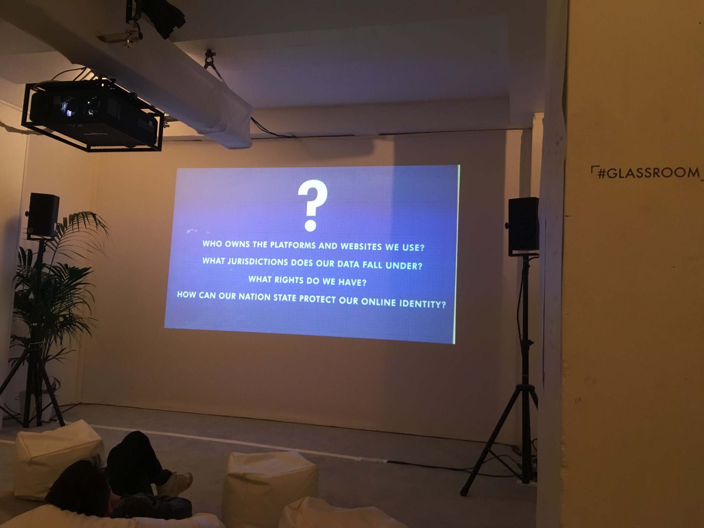

#byod4lchat Day 1 2018 - Connecting and Confidence
Collated tweets from the first tweet chat of 2018
- awww :) it was fab :) awesome team ... #byod4lchat https://twitter.com/alexgspiers/status/953009868599889925
- @alexgspiers @BYOD4L How come we haven't done anything together yet then? Done stuff with @neilwithnell - not for ages though #byod4lchat
- @BYOD4L A5 #BYOD4Lchat Joining in with chats but still need to post more original comments to others posts. Tend to lurker quite a bit
- Thanks @neilwithnell and @debbaff for running #BYOD4Lchat - another quick hour! Some meaty discussions going on there. Thanks! https://twitter.com/BYOD4L/status/953008912491515905
- @CliveBuckley I think both are educationally appropriate. But what do you do if someone says 'I don't have to sign up to that, and nothing in the university regulations says I have to'? #BYOD4Lchat
- @BYOD4L Living in a small Island digital networking has opened my horizons and allowed me to complete my Doctorate #BYOD4Lchat
- thanks for a great chat everyone #BYOD4Lchat see you online for more fun and games ... pic.twitter.com/UAhkvNWJcP
- A1: Oh yeah, forgot text messaging. Still hugely important in my life! #BYOD4Lchat
- Good night all. Type with you later in the week, not sure what evening yet. I'll post my blog when I can resolve some technical issues :( #BYOD4Lchat
- A6 set goals and share your process of growth with others including your students, be open to new apps/tech #byod4lchat
- @sheilmcn @alexgspiers @suebecks @BYOD4L I left FB a couple of years ago, don't miss it :-) I'm contactable in other ways and it's a lovely surprise to run into old friends and not already know their news! #BYOD4Lchat
- @alexgspiers @sharon_harvey2 @neilwithnell Discovered this today - women in phd twitter group in Scotland ? @PhdWomenScot #byod4lchat
- @BYOD4L A6 dont be afraid to reach out to people. Everyone in this community is super helpful. Ive been blown away by the support and opportunities afforded to me by @suebecks @alexgspiers & @aiaddysonzhang. Im sooo excited for what 2018 holds #BYOD4Lchat
- @BYOD4L #BYOD4Lchat Perhaps we all need help to be confident. When you see twitter debate in a negative way it can be very off putting - hostile
- Thanks all - found that really interesting. Now. Need. To. Eat. #BYOD4Lchat
- @sharonlflynn I now, just starting #BYOD4Lchat
- thank you all - that was fab, #BYOD4Lchat https://twitter.com/BYOD4L/status/953008912491515905
- @BYOD4L A4 #BYOD4Lchat Yes def make assumption that students are more confident than they especially re trying things related to their profession (healthcare) they are worried about a range of issues
- A fantastic #BYOD4Lchat Thank you all for joining in, same again tomorrow (same time and place). Storify will follow ...... pic.twitter.com/g6gQXYNvWo
- #BYOD4Lchat Great chat. Where did that hour go? https://twitter.com/BYOD4L/status/953008731679272960
- This is interesting. The interface between university, school and commercial is something we have to recognise. #BYOD4Lchat https://twitter.com/srowett/status/953007734072410113
- @BYOD4L My confidence grows when I collaborate. I am bolder, happier, more creative + productive when I have someone alongside. #byod4lchat
- Great chatting everyone, but all good things come to an end..... sorry #BYOD4Lchat
- @BYOD4L A6 It's important to get out there and engage with others, even those you may not really know. :) Remember, nothing ventured, nothing gained.. #BYOD4Lchat
- @BYOD4L A2 I use Twitter for work, Instagram for photo sharing, WhatsApp with friends, Email work and home accounts. Deleted FB a couple of years ago #BYOD4Lchat
- @CliveBuckley @alexgspiers This kind of thing makes me worry about external services - taken as a very non-scientific exercise with a group of students #BYOD4Lchat pic.twitter.com/Mo5ujCJEXO
- A6 grow your network by being active and interacting. Start conversations by Liking a post, tweet, comment on a blogs, #BYOD4Lchat
- @BYOD4L These were my tips from 6 years ago and think they still stand https://www.slideshare.net/suebeckingham/using-social-media-to-create-a-pln-8054874 #BYOD4Lchat
- absolutely, Hi Susan #BYOD4Lchat https://twitter.com/SusanMGreig/status/953007499245969409
- @BYOD4L A3 #BYOD4Lchat I am getting better at engaging with networks, tend to use for additional information. Need to reach out more. Nice when you meet a twitter connection in person
- @CliveBuckley @alexgspiers But also can then have values of the institution. People who take action for harassment/bullying etc. People who run it who care about the participants and use their data ethically, unlike the big commercial services 2/#BYOD4Lchat
- A6 1. Don't be disappointed if it doesn't grow quickly - it takes time. 2. Engage - getting involved in a conversation - your views do count. #BYOD4Lchat https://twitter.com/BYOD4L/status/953006784276557824
- A5 this is me developing my confidence in using periscope for teh first time today with the support of @DiverseLearners #BYOD4Lchat
- @gwenffrwd fantastic! #BYOD4Lchat
- A6 #BYOD4Lchat Be selective about who you follow. Engage - RT, add a comment, ask a question. It takes time to make new friends. https://twitter.com/BYOD4L/status/953006784276557824
- @BYOD4L A1 I mainly use my smart phone, my laptop at work and my tablet at home, there is usually something handy! #BYOD4Lchat
- A5 Using an app in a personal context allows you to gain confidence to apply it in a professional context. Recently used Facetime in class for students to interview a blogger. #byod4lchat
- A6 follow others, join in, experiment with new tools, #BYOD4Lchat https://twitter.com/BYOD4L/status/953006784276557824
- A6: Ask people you trust to start with. See what they do, or if they can give you some backup or be a critical friend. #BYOD4Lchat
- @BYOD4L A4 Got a young degree arts student to do Vlog for me challenging the digital native assumption https://youtu.be/4B8kqpteDfs #byod4lchat
- @BYOD4L A5 Following Twitter chats led by educators in the US, reading blogs e.g. @hopkinsdavid and @timbuckteeth #BYOD4Lchat
- Q6 Do you have any tips to help others grow their connections and network? #BYOD4Lchat
- @BYOD4L #BYOD4Lchat A2 Twitter! For things Im interested in personal and professional but tend to keep them separate. FB but not a big fan Students seem to use Instagram? But I know nothing about that
- yes, lets start a chat (or three) soon on this #BYOD4Lchat https://twitter.com/srowett/status/953006455833157633
- @debbaff @neilwithnell That's what I tell my students. And everybody's comfort zone is different. #BYOD4Lchat
- "Risks" says @neilwithnell . A big big issue. How to we encourage people to take manageable, realistic but fulfilling risks. A subject for another chat? #BYOD4Lchat
- Q6 coming up shortly ... (last one) #BYOD4Lchat
- take a few risks, its all learning either way #BYOD4Lchat https://twitter.com/debbaff/status/953005964407529473
- @BYOD4L A5 collaboration helps develop my confidence in tech e.g Twebinars I did with @WeNurses and @PUNC14 @rjonesplymouth #BYOD4Lchat
- great to see you here Amanda, #BYOD4Lchat https://twitter.com/ADeaves/status/953005891401535489
- @CliveBuckley I am fortunate that I teach academic staff to use twitter. Guided exploration of the good and bad practice helps then feel comfortable in developing their skills. #livuntel #byod4lchat
- A4 #BYOD4Lchat like @neilwithnell says for me its a question of just trying things out .. sometimes scary ... but its ok for learning2b scary right ? dont we learn best when out of our comfort zone ?
- @alexgspiers and confidence and communities grow #byod4lchat
- @sharonlflynn @alexgspiers @daveowhite @daveowhite uses every word elegantly. Oh, I see what you mean. #BYOD4Lchat
- @BYOD4L #BYOD4Lchat Apologies late to the chat. I use tweet deck, iPad and phone
- @SFaulknerPandO @debbaff @suebecks @BYOD4L Only if you promise not to Top Trump me again (haha) #byod4lchat
- @alexgspiers This is so important. Also gentle encouragement and guidance. #BYOD4Lchat
- The connection becomes deeper #BYOD4Lchat https://twitter.com/andrewmid/status/953003728013053953
- A3 Twitter connections eg @livinginhope @NHSE_Paul Beverley Powell help me connect & learn by copying me into stuff and intros #byod4lchat
- @alexgspiers I think active listening is OK, but often associated with coaching type processes? LPP has good evidence base across multiple professional communities #BYOD4Lchat
- A5 I am like @sharonlflynn - a lurker but tweetchats like this are giving me more confidence. Once I started using Twitter I slowly gained confidence to have a voice #BYOD4Lchat
- A5 One example was taking part in an online 12 apps at Christmas course #RUL12AoC helped pick up new tools. #BYOD4Lchat
- A5 Following a CPD course delivered by @cpjobling, I used Google Forms ad then Flubaroo to offer an open opportunity to conduct a competency quiz and then engage in automated marking. #BYOD4Lchat
- @LJ_Rees agreed, the scenario does hit home #BYOD4Lchat
- @debbaff Well, thank you! But for me (and probably some others) it usually follows a period of testing the water, understanding the protocols, seeing who the central characters are etc. #BYOD4Lchat
- Don't like the term lurking. Active listening is better for me. #BYOD4Lchat https://twitter.com/srowett/status/953003212579196930
- @srowett we wanna hear you steve :) #byod4lchat
- A4 For me its about providing a safe, supportive space (physical or virtual) to allow people to ask questions and get up to speed at their own pace. Seems obvious but I've seen examples where people in a space and they aren't ready #BYOD4Lchat
- @SFaulknerPandO @scottturneruon Yes, I've always liked it as it felt like a very natural, observable process #BYOD4Lchat
- A5: For an edtech type, I'm usually very late to actually using technologies myself. I think it's because I'm never really quite convinced that anyone wants to hear me. So I lurk^H^H^H^H legitimately peripherally participate for a while #BYOD4Lchat
- @BYOD4L A4 #BYOD4Lchat establishing confidence to engage is more important than knowledge itself. The former will sustain you much more than the latter.
- A4 I sympathised greatly with teacher in the scenario. Its only with gentle support and nurturing - show and copy type approach - that I've been able to engage in the things I have. Tweetdeck, hootsuite etc a case in point #BYOD4Lchat
- A5 just by trying - have a go approach - what could go wrong? #BYOD4Lchat https://twitter.com/BYOD4L/status/953003895466418176
- Easy to forget about peripheral participation. Those on the edges often grow. #BYOD4Lchat https://twitter.com/srowett/status/953003212579196930
- A5 #BYOD4Lchat I very much started out as a lurker (introvert by nature) but it's about taking one baby step at a time. https://twitter.com/BYOD4L/status/953003895466418176
- @neilwithnell Definitely that is my experience as well. #BYOD4Lchat
- @sheilmcn @scottturneruon with you there Sheila. I use the term 'positive silent participation' #BYOD4Lchat
- Q5 Share an example of how you have developed your own confidence in using digital tools #BYOD4Lchat
- @srowett @scottturneruon I like that ... not sure I could spell it quickly on twitter mind you ! .. respect #byod4lchat
- and Suzanne is hopefully teaching us all, .... keen to learn #BYOD4Lchat https://twitter.com/suebecks/status/953003463969067008
- @BYOD4L A3 #BYOD4Lchat I really value my connections and the more I know them/you the more I know where interests and e parties lie
- A4 Yes scenarios could have been flipped in terms of their response! I assumed that that would be the response and I shouldn't have. We assume students are much more confident. #BYOD4Lchat
- @sharonlflynn it's a amazing. Love it. I will definitely be using it in future. Much easier. #BYOD4Lchat
- @BYOD4L A4 We need to support each other to develop confidence to give a variety of different communication tools a go. Case in point is @SFaulknerPandO is going to teach me how to use Snapchat for L&T #BYOD4Lchat
- A4 Begin from the beginning and dont assume anything. #BYOD4Lchat
- @sharon_harvey2 not all will be confident, speak as a nurse myself #BYOD4Lchat
- @scottturneruon exactly though I dont like term lurk - observe is much more positive imho #byod4lchat
- @scottturneruon I find reframing lurking as legitimate peripheral participation can do wonders for people's confidence - gives the permission to wait a little and gradually engage #byod4lchat
- so true ...#byod4lchat sometimes good to just take a deep breath and have a go at things ... https://twitter.com/sheilmcn/status/953002647103172611
- A2 2/2 use Twitter I love it's speed, lack of hierarchy, and short info bursts which is great for my flitty brain. #byod4lchat
- A4. I think it might have to start with it is ok to 'lurk'/passive engagement. See what others do and then join in. #BYOD4Lchat https://twitter.com/BYOD4L/status/953001540754726912
- @sharon_harvey2 warning Sharon - tweetdeck is highly addictive #BYOD4Lchat
- @sharon_harvey2 great stuff ! We can chat about that on wed too ! #byod4lchat ... its such a help for things like this ...
- @BYOD4L A1 whatever is handy but mostly iPhone on commute #BYOD4Lchat
- @sharon_harvey2 I couldn't manage twitter without tweetdeck! #BYOD4Lchat
- A4 I am currently doing a small piece of research on student nurses internet self-efficacy. We are starting to implement more blended learning into the curriculum and we are assuming that students are confident with accessing activities online #BYOD4Lchat
- @BYOD4L A4 cont - events like this really help with increasing confidence and connecting with extended community of practice #byod4lchat
- A4 start from scratch, don't assume, ask and respect #BYOD4Lchat https://twitter.com/BYOD4L/status/953001540754726912
- A4 #BYOD4Lchat I've used the Visitors and Residents activities with my students (academic staff). This helps them reflect on their own skills - they tend to make their own assumptions about their own skills. https://twitter.com/BYOD4L/status/953001540754726912
- @andrewmid Hey ! Hi Andrew :) #byod4lchat
- Just discovered Tweetdeck. Wow!! Thanks all. #BYOD4Lchat
- @BYOD4L A4 - yes, I think if you have used social media its easy to forget how scary it can be at first. Also with increased advertising, use of algorithms it can be annoying to find your way around for staff and students #BYOD4Lchat
- @BYOD4L their mindset of confidence or our interpretations of how digitally competent they are? Sorry not sure I can answer if the latter #BYOD4Lchat
- @neilwithnell @sharon_harvey2 we are hoping to run some tweetchats at swansea soon ... will keep you posted ... might help ... #byod4lchat
- @sheilmcn @VivienRolfe A friend once mistyped 'Vodka' as 'Vodak' and that's a name that has stuck with us ever since #BYOD4Lchat
- A2 @ Twitter mostly, but also G+ #BYOD4Lchat
- @jobadge @sharonlflynn good point - know lots of schools use it to keep in touch with parents too #byod4lchat
- @sharon_harvey2 yes, worth a try #BYOD4Lchat
- Q4 In general, we still make assumptions about people's digital confidence. How do we shift this mindset? #BYOD4Lchat
- And some interesting questions posed at the same exhibition #BYOD4Lchat pic.twitter.com/kncCmW625o
- @DiverseLearners @alexgspiers @BYOD4L Q3 How do your connections help you with your learning and networking? #BYOD4Lchat
- @scottturneruon @alexgspiers LinkedIn groups are a great way of keeping in touch with alumni - they post job opps for current students and we invite them back for guest lectures #BYOD4Lchat
- Q2 What apps or services do you use to connect? #BYOD4Lchat https://twitter.com/DiverseLearners/status/953000952272998400
- @alexgspiers @neilwithnell @BYOD4L not using Tweetdeck tonight so have only seen Q1. Can you RT other questions pls #byod4lchat
- A3 #BYOD4Lchat Connections made on twitter have led to some really useful IRL connections and collaborations. I've met a wonderful group of people.
- @alexgspiers great tweet #BYOD4Lchat
- #BYOD4Lchat Q4 coming up ...
- A3 Helps me keep track of whats going on in the world of #edtech #mLearning and #socialmedia The expertise is down a virtual corridor #BYOD4Lchat
- @sharon_harvey2 Excellent ! #byod4lchat
- Interesting representation of Facebook algorithm from a recent exhibition. #BYOD4Lchat pic.twitter.com/c3A64QHRPg
- @drkhemsworth @debbaff @suebecks @BYOD4L Many people I support think that too but often because haven't had modelling/support #byod4lchat
- @sharon_harvey2 works really well, hashtag use in the classroom, embed into the vLE for those not on twitter etc #BYOD4Lchat
- @sharon_harvey2 @neilwithnell @suebecks @BYOD4L Don't forget to post it in Google+ group. I often mention it in blog/clogs #BYOD4Lchat
- @gwenffrwd @BYOD4L definitely .. so useful for staff too:) #byod4lchat Hiya Non ! Glad you made it !:)
- @sheilmcn @alexgspiers @suebecks @BYOD4L I keep my Fb very private, for family and friends. But recently have started to use private groups more for worky things. #BYOD4Lchat
- A3 I am also going to start to use Twitter to keep in touch with my students #byod4lchat
- @DiverseLearners @suebecks @BYOD4L I love them ... used to do on paper ... now use Ipad and either Paper53 or Adobe Sketch Book ... #byod4lchat ... another challenge for you for friday !
- A3 #BYOD4Lchat They keep me informed and challenge me to investigate new areas. Emotional support too. https://twitter.com/BYOD4L/status/952998858388328448
- A3 I use it a lot for networking for my PhD. I have connected loads of educational developers and academics interested in Student Engagement for Curriculum Development https://wordpress.com/view/studentstaffpartnerships.wordpress.com #byod4lchat
- @BYOD4L A3 I've extended my network way beyond people I've met face to face and now connect with educators across the globe. Brings so many perspectives. #BYOD4Lchat
- @BYOD4L Connecting offers students authentic experiences, makes them realise that there is a world beyond campus and improves their communication skills #employability #byod4lchat
- A3 I learn so much from Twitter chats and then it is great to have an opportunity to meet IRL those I meet online #BYOD4Lchat
- @srowett yes being able to do a Frozne as I like to say is really useful #BYOD4Lchat
- A3 My PLN has grown so much since I have been connecting online .. have had so many opportunities as a result ... awesome communities like this ... i'm always learning something new #byod4lchat https://twitter.com/BYOD4L/status/952998858388328448
- A3 sharing of helpful resources, inspiration, test things out etc #BYOD4Lchat https://twitter.com/BYOD4L/status/952998858388328448
- A2 #BYOD4Lchat For non-work, instagram, whatsapp (which I hate), viber.
- @sharon_harvey2 @neilwithnell @suebecks @BYOD4L Have tweeted options on another tweet #byod4lchat. Some uni's have site licences #BYOD4Lchat
- @sharon_harvey2 @BYOD4L A2 Hi @sharonharvey2 I promise to be brave and do it. My brave act for today was using periscope! Do you blog? #BYOD4Lchat
- A3: Twitter is very useful for consolidating different parts of my life and finding interesting things to read about or events to go to. But you have to be prepared to (Elsa voice) 'let it go' when you've gone a bit out of date with recent messages #BYOD4Lchat
- A3 - they inspire and reassure me in equal measure, also,they make me think about things in different ways #BYOD4Lchat https://twitter.com/byod4l/status/952998858388328448
- @sheilmcn I keep trying and failing with Slack ... like the idea as need to use it for stuff but just cant get the hang of it ... #byod4lchat ... anyone done a idiots guide ?
- A2 #BYOD4Lchat Also email (Outlook app and gmail), Facebook, blogging (Medium, blogger, wordpress).
- @debbaff @DiverseLearners @suebecks @BYOD4L #sketchnotes are everything I wish worked for me! #byod4lchat
- @suebecks @BYOD4L mindmap @InspirationSW free or paid app 30 day free download for PC or paid Check if your uni has site licence #byod4lchat
- @neilwithnell @suebecks @DiverseLearners @BYOD4L yeah I am going to try this out. Thanks Kerry #BYOD4Lchat
- @alexgspiers A3 I use to LinkedIn to share things I find interesting and it is a great tool for keeping in contact with ex-students #BYOD4Lchat
- Q3 How do your connections help you with your learning and networking? #BYOD4Lchat
- A2 #BYOD4Lchat Twitter is the major one, and tweetdeck for organising streams. https://twitter.com/BYOD4L/status/952996153687232513
- Wow, super chat, Q3 coming up... #BYOD4Lchat
- A2 forgot Slack - using that more now too #BYOD4Lchat
- @sharon_harvey2 @neilwithnell ooo me too ... I take it you have discovered #phdchat and all those sorts of stuff ! #byod4lchat ... we must grab a cuppa and chat in real life ! :)
- @srowett A1 work provide my laptop but the iPad and iPhone are my own. My line manager has an iPad provided by work. #BYOD4Lchat
- @SFaulknerPandO @BYOD4L Please write a Blog @SFaulknerPandO I want to learn how to hold tutorials via Snapchat #BYOD4Lchat
- A2: We've tried quite a few 'workgroup' apps at work, but none of them have really stuck. Often we just use the one we personally prefer - it's much better if there's no-one else on there to give you work to do! #BYOD4Lchat
- A1 #BYOD4Lchat I use my iPhone mostly, but also my iPad to connect. https://twitter.com/byod4l/status/952993997030539264
- @suebecks @BYOD4L 3 examples 1st a template that comes with app, 2nd for a presentation 3rd notetaking #byod4lchat pic.twitter.com/blktlqZmZ2
- A2 Email still has high usage. Twitter next. Noticed this year I use it more than my contacts in Outlook! FB for personal. Whatsapp for family/parental work. I add and delete iIstagram on a semi regular basis. #BYOD4Lchat
- @neilwithnell I am really liking Twitter at the moment. This has helped me no end with networking for my PhD #BYOD4Lchat
- A2 Twitter and LinkedIn mainly. #BYOD4Lchat https://twitter.com/BYOD4L/status/952996153687232513
- @BYOD4L A2 Facebook and Instagram for social news, then Twitter and LinkedIn. This usually signposts interesting blogs and links #BYOD4Lchat
- @BYOD4L A2 the app I use most with my students is Snapchat, where I hold tutorials using the chat function, they love it, so do I. #BYOD4Lchat. I keep threatening to write a blog about it!
- @srowett @DiverseLearners @BYOD4L @alexgspiers haha happens to the best of us steve :) no worries ....#byod4lchat #LTHEchat
- Judging by the answers from Q1, laptops are definitely not going away, as perhaps predicted during the rise of tablets #BYOD4Lchat
- any particular preference Sharon? #BYOD4Lchat https://twitter.com/sharon_harvey2/status/952996418880491520
- @debbaff iPhone, laptop, new iPad is on my lust for the spring. #BYOD4Lchat
- A1. IPad and laptop #BYOD4Lchat https://twitter.com/BYOD4L/status/952993997030539264
- @sharon_harvey2 <waving > glad to see you here Sharon !! #byod4lchat
- @SFaulknerPandO @BYOD4L I forgot to use #byod4lchat - putting it down to poorliness, meds and a super busy day
- @DiverseLearners @BYOD4L @alexgspiers My fingers are autocompleting #LTHEchat instead of #BYOD4Lchat for each message.
- A2 twitter, Email (ouch), G+, workplace is a new one, whatsapp, #BYOD4Lchat https://twitter.com/BYOD4L/status/952996153687232513
- I've not tried this app before. Thanks Kerry! #BYOD4Lchat https://twitter.com/DiverseLearners/status/952996172079271937
- A2 #BYOD4Lchat twitter, google+, email, padlet, linked in, facebook, whats app, Tweetdeck for managing tweetchats ! plus loads more I can't think of ...
- @BYOD4L A2 - twitter mainly and my blog but also instagram, google +, whatsapp at times and good old email #byod4lchat
- @BYOD4L @alexgspiers Pants just realised I should be using #byod4lchat for tweetchat on connecting BUT used #byod4l instead.
- bit of both really IMO #BYOD4Lchat https://twitter.com/srowett/status/952996234368823296
- A2 oh yes and Linkedin #BYOD4Lchat
- A2: Work is still mostly email. Social is mostly WhatsApp. Personal development is twitter #BYOD4Lchat
- A2 Twitter, Skype, and Facebook #BYOD4Lchat
- @srowett guess it depends.Im lucky that work provided me with an ipad - so handy particularly when you cant log into presentation machines in-lecture theatres like this afternoon #byod4lchat
- extra screen is a bonus #BYOD4Lchat https://twitter.com/suebecks/status/952995300553216000
- @neilwithnell Interesting. Is that because workplaces are less willing to supply devices, or that ppl just prefer it that way, do you know? #BYOD4Lchat
- Q2 What apps or services do you use to connect? #BYOD4Lchat
- fairly standard practice in many areas Steve #BYOD4Lchat https://twitter.com/srowett/status/952995914431500290
- @srowett ooh lovely ! #byod4lchat ... I have tried to use some of the big touch screen devices bit always end up getting confused !
- @sheilmcn I'd be interested to know if BYOD for work is becoming more common, as I don't see many people at my place doing it #BYOD4Lchat
- @BYOD4L A1 Smartphone for me, although I'm trying harder this year to keep it for personal use rather than work emails. Chromebook for portable work and connecting #BYOD4Lchat
- @neilwithnell haha didnt take long ...#byod4lchat
- @neilwithnell @CliveBuckley Was waiting to check it was OK to do so, i.e you wanted it before this chat or after and to include further reflection. I have the lovely @debbaff to credit for me using PADLET as my repository, but I'm using @PebblePad as my vehicle - #BYOD4Lchat
- @debbaff Phone, laptop and mobile internet. Obviously I plug into work wifi and sometimes big displays #BYOD4Lchat
- @srowett Excellent ! So what devices do you use of your own then Steve ? #byod4lchat
- @BYOD4L A1 I start my day connecting with others on my laptop, then on my commute move to smartphone. Once at work I log in to my PC and fire up Tweetdeck and LinkedIn on a 2nd screen. #BYOD4Lchat
- @BYOD4L And now with the # rookie error! Mostly my iPhone 6 or iPad as those are the devices I am most likely to have with me on a daily basis #BYOD4Lchat must remember the # !
- @debbaff and the word pink is there....#BYOD4Lchat :)
- A1: There's still a lot to be said for a big display, especially during a tweetchat #BYOD4Lchat
- @LJ_Rees A1 I dont know Lou ... you have moved your office PC around quite a bit ! :) #byod4lchat
- A1 Tend to use the my android phone and iPad for Twitter mostly. I am still fond of accessing Twitter via the browser on a laptop or PC #BYOD4Lchat #oldskool
- A1: I'm probably relatively unusual and don't have a work-provided laptop, phone or tablet - I BYOD for everything I do #BYOD4Lchat
- A1 Ipad, iPhone, Laptop ... (and my little pink car to drive around and connect with people :)) #BYOD4Lchat https://twitter.com/BYOD4L/status/952993997030539264
- @CliveBuckley Hello Clive. We've not met but I have mentioned your wise encouraging words to me in my first blog on todays theme. #BYOD4Lchat
- depends if it can be mobilised ;) #BYOD4Lchat https://twitter.com/LJ_Rees/status/952994390691205120
- @LJ_Rees not unless it is really mobile eg can fit into your handbag #BYOD4Lchat
- @srowett essential #BYOD4Lchat
- A1 phone, tablet. Office PC doesn't count, right? #BYOD4Lchat
- A1: Phone and laptop mostly. And arms (I tend to be quite a huggy type - do they count?) #BYOD4Lchat
- Apologies to those not interested in tech or education. The next hour will be all about #byod4lchat Lets go to work...
- @BYOD4L A1 - my ipad (favourite for twitter) and my phone #BYOD4Lchat
- A1 all things Apple for me as they all connect Ipad, Iphone I whatever (and a laptop occasionally) #BYOD4Lchat https://twitter.com/BYOD4L/status/952993997030539264
- Q1 What mobile device(s) do you use to connect with others? #BYOD4Lchat
- all set for #BYOD4Lchat
- We will start with a question Q1 and ask that you start your reply with A1 and be sure to use #BYOD4Lchat
- Are you ready?, then lets make a start #BYOD4Lchat
- We hope you have enjoyed the first day on #BYOD4L, now we have our first #BYOD4Lchat
- Join the #BYOD4L team @sheilmcn @neilwithnell @alexgspiers @debbaff and @SFaulknerPandO for the best CPD opportunity you'll get over a one week! Ist tweetchat at 8pm #BYOD4Lchat which will focus on the theme 'Connecting & Confidence' + more at https://byod4learning.wordpress.com/2018/01/15/monday-15th-january-2018-byod4l-day-1-and-the-theme-is-connecting-confidence/
- #BYOD4Lchat nice cuppa at the ready ... devices charged .. it must be nearly time for our first tweet chat of the week ! Connecting and Confidence ... pic.twitter.com/RzYl4O0nzS
- 20 minutes before we start the #BYOD4Lchat time to get a drink and check out the post https://byod4learning.wordpress.com/2018/01/15/monday-15th-january-2018-byod4l-day-1-and-the-theme-is-connecting-confidence/
- @suebecks Awesome :) #byod4lchat charging up devices at the ready as we speak !
- Better get ready for the first of 5 (yes 5) #BYOD4Lchat every evening this week at 2000 hrs UK time. Intrigued? Then join in .... all welcome (remember the hashtag) pic.twitter.com/STPRq9jIrb
- @suebecks Definitely words of wisdom there my wonderful friend :) how are you my lovely sue ? #byod4lchat
- @LJ_Rees @gwenffrwd @sharon_harvey2 @cpjobling Yay ... nice to see you here folks ...#byod4lchat we are just getting ourselves ready ! see you in a bit at 8pm #byod4l
- Whos joining us for #BYOD4Lchat this evening?! One hour to go. Tonights topic is connecting & confidence
- I've connected earlier on the google community. But Hell from Swansea, Will be dipping in and out as I'm able to this week. Hello @gwenffrwd, @sharon_harvey2 @cpjobling @debbaff Anyone else? #byod4l #BYOD4Lchat
- Whoo hoo Im looking forward to connecting with confidence today for Day One of #BYOD4L ... #BYOD4Lchat ... who will be joining me ? pic.twitter.com/cv7bK4QX5W
- See you next week - same time same place! #LTHEchat - remember it is a shared chat with #BYOD4Lchat on 17th Jan